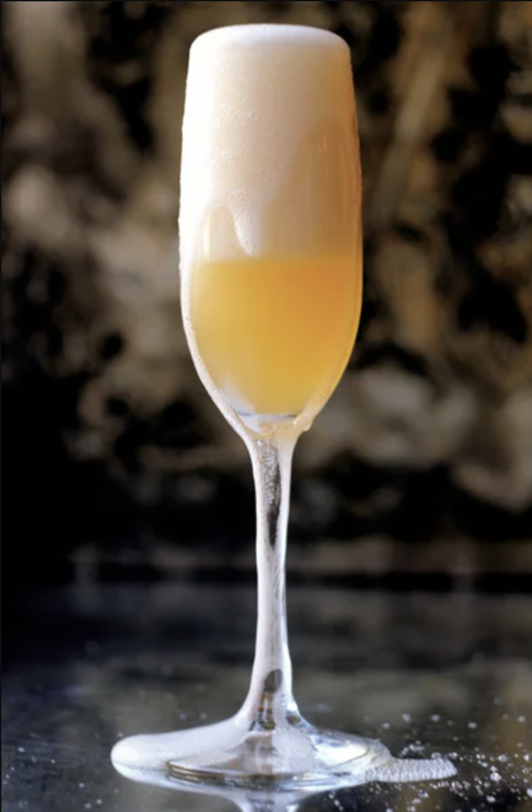

Aquarius: Moonwalk

This cocktail was made in honor of the Apollo 11 moon landing. This drink represents Aquarius' boldness to go where no one has gone before.
Ingredients
- 1 oz. fresh grapefruit juice
- 1 oz. orange liquer
- 3 drops rose water
- Champange or sparkling wine, for topping
Steps
- Combine grapefruit juice, orange liqueur, and rose water in an ice-filled shaker. shake virgorously and strain in to a champange flute; top with champange.